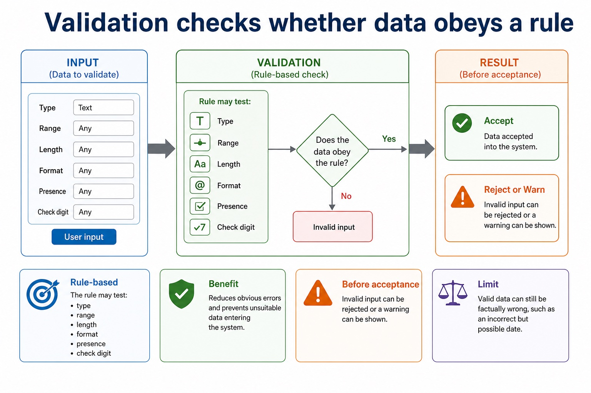
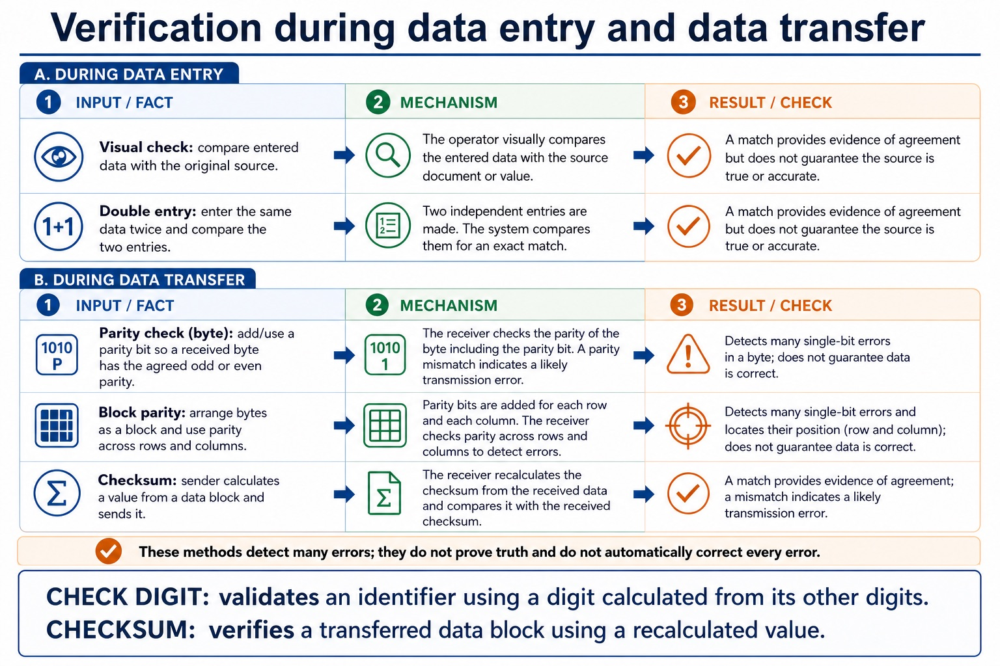
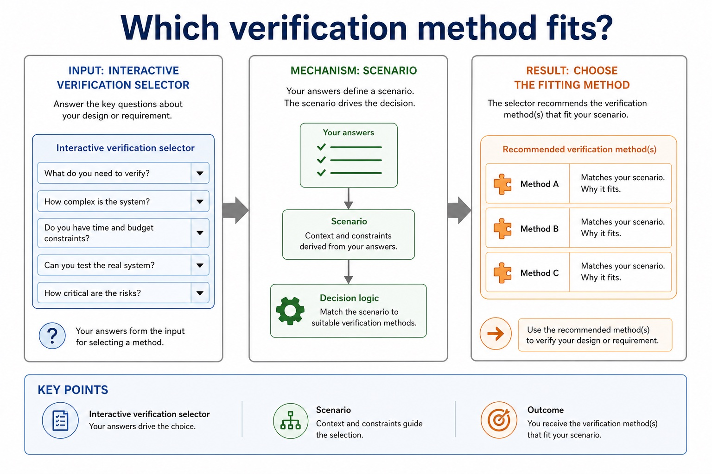
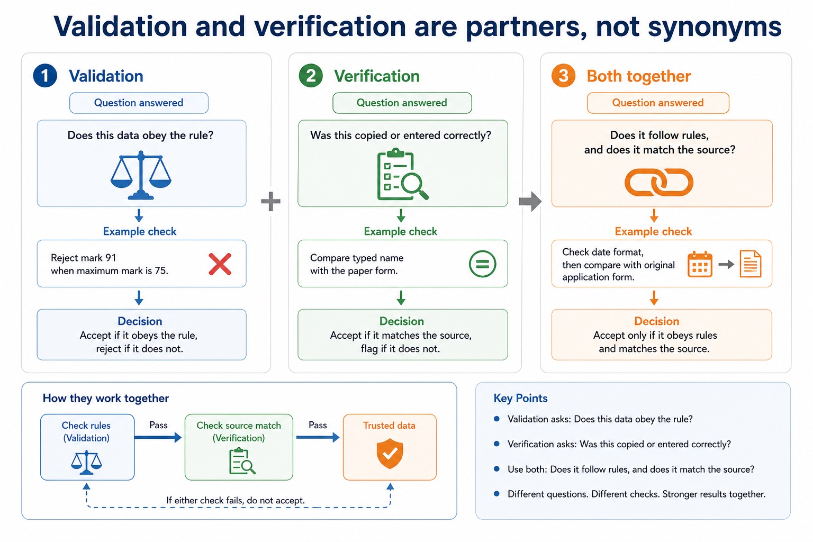
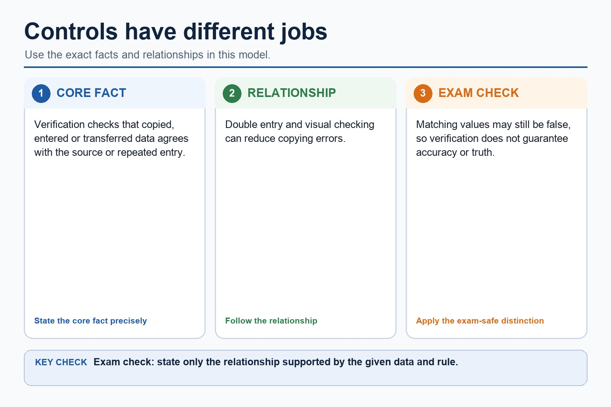
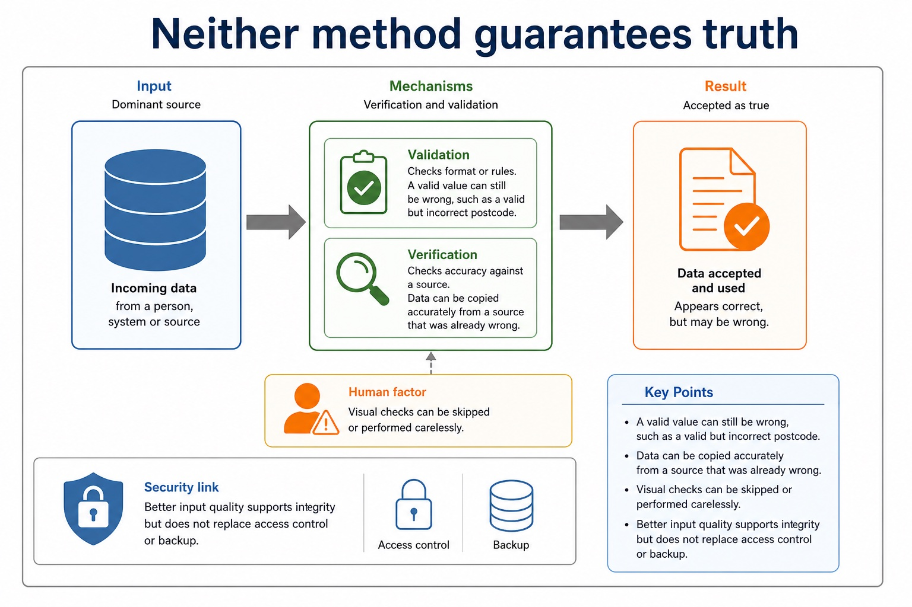

Cambridge AS9618 | Paper 1 | Section 6: Security, privacy and data integrity
Validation, verification, parity and checksums
Flexible-depth lesson
S6.07, S6.08 | Learn from the diagrams, test the method, then choose the practice you need.
Choose a Quick, Full or Deep route
Quick route
Use the diagnostic, learning objectives, first worked example and foundation question. Stop once the learner can explain the central distinction accurately.
Full route
Use every knowledge-point material set, the worked method, the terminology check and all questions.
Deep route
Add the prerequisite refresher, ask learners to connect the concept checklist, discuss the labelled extension and complete a transfer question without a model answer.
Part 1 | optional depth
Prerequisite knowledge and quick diagnostic
Recall S6.01 before starting this lesson.
Give one accurate definition or method step before continuing. If it is missing, revisit only that prerequisite.
Open optional prerequisite refresher
Distinguish data security, data privacy and data integrity as separate concepts; evidence must not treat confidentiality, lawful/appropriate use and correctness/consistency as interchangeable.
Distinguish data security, privacy and integrity.
Part 2 | knowledge-point material sets
Learn each point through visuals
Follow the map, the three-part explanation and the concrete cue. Open precise wording only after the idea is clear.
Open the concept checklist and choose what to teach
range check
format check
length check
presence check
existence check
limit check
check digit
verification
integrity / data integrity
visual check / visual checking
double entry
parity check
byte
block parity
checksum
01
S6.07 · concept
Range check · Format check · Length check · Presence check
Concept map
range checkformat checklength checkpresence checkexistence checklimit checkcheck digitverificationintegrity
See how it works
MeaningValidation and verification reduce input, copying and transfer errors and therefore help protect data integrity
MechanismValidation methods include range, format, length, presence, existence and limit checks, plus a check digit
ConsequenceData validation and data verification help protect data integrity by detecting or preventing many input, copying and transfer errors before inaccurate or corrupted data are accepted
S6.07 diagrams
1 / 5
01
Comparison · 1 of 5
Common validation checks
Open text transcript
The seven required validation methods are range, format, length, presence, existence, limit and check digit.
A range check applies both a lower and an upper bound; a limit check applies one stated upper or lower limit.
An existence check confirms that a value is present in a specified stored lookup or file.
A check digit is calculated from the other digits and compared to detect many entry or scanning errors.
Validation checks rules and reasonableness; it does not prove that data is true.
02
Diagram · 2 of 5
Validation and verification protect data quality in different ways
Open text transcript
Validation Checks input data against rules before it is accepted.
Verification Checks that data has been copied, entered or transferred accurately.
Input error A mistake made while entering or transferring data.
Data integrity Data remains accurate, consistent and not accidentally corrupted.
03
Process · 3 of 5
Integrity protects data from unauthorised or accidental alteration
Open text transcript
Goal Data should remain accurate, complete and unaltered unless changed by an authorised process.
Risk Exam marks, bank balances or stock levels are changed incorrectly.
Validation and verification Validation checks stated rules; verification checks entered or transferred data against its source, not whether the source is true or complete.
Other controls Access rights, checksums, hashes and audit trails can prevent, detect or record some changes, but no control guarantees integrity.
Exam wording Explain exactly how the named control prevents, detects or records an incorrect change.
04
Diagram · 4 of 5
Validation checks whether data obeys a rule

Open text transcript
Before acceptance Invalid input can be rejected or a warning can be shown.
Rule-based The rule may test type, range, length, format, presence or check digit.
Benefit Reduces obvious errors and prevents unsuitable data entering the system.
Limit Valid data can still be factually wrong, such as an incorrect but possible date.
05
Comparison · 5 of 5
Verification checks accuracy against the source

Open text transcript
During data entry, visual checking compares entered data with its source and double entry compares two independently entered values.
During transfer, a parity check on a byte tests the agreed odd or even parity; block parity applies parity across rows and columns of a data block.
For a checksum, the sender calculates and transmits a value for the data block; the receiver recalculates and compares it.
These methods detect many errors but do not prove truth or automatically correct every error.
A validation check digit belongs to an identifier; a transfer checksum belongs to a transmitted data block.
Open precise syllabus wording
Describe how data validation and data verification help protect the integrity of data; describe and use methods of data validation.
Validation and verification reduce input, copying and transfer errors and therefore help protect data integrity. Validation methods include range, format, length, presence, existence and limit checks, plus a check digit.
MeaningDescribe and use verification during data entry (visual check and double entry) and during data transfer (parity check on a byte, block parity and checksum)
MechanismDuring transfer, byte parity detects many single-bit errors, block parity adds row/column evidence and a checksum is recalculated from the received data block
ConsequenceVerification checks whether data was copied accurately, using visual checking or double entry
S6.08 diagrams
1 / 5
01
Comparison · 1 of 5
Verification checks accuracy against the source
Open text transcript
During data entry, visual checking compares entered data with its source and double entry compares two independently entered values.
During transfer, a parity check on a byte tests the agreed odd or even parity; block parity applies parity across rows and columns of a data block.
For a checksum, the sender calculates and transmits a value for the data block; the receiver recalculates and compares it.
These methods detect many errors but do not prove truth or automatically correct every error.
A validation check digit belongs to an identifier; a transfer checksum belongs to a transmitted data block.
02
Comparison · 2 of 5
Which verification method fits?

Open text transcript
Interactive verification selector
Scenario
03
Comparison · 3 of 5
Validation and verification are partners, not synonyms

Open text transcript
Question answered
Validation
Does this data obey the rule?
Reject mark 91 when maximum mark is 75.
Verification
Was this copied or entered correctly?
Compare typed name with the paper form.
Both together
04
Comparison · 4 of 5
Controls have different jobs

Open text transcript
Verification checks that copied, entered or transferred data agrees with the source or repeated entry.
Double entry and visual checking can reduce copying errors.
Matching values may still be false, so verification does not guarantee accuracy or truth.
05
Diagram · 5 of 5
Validation and verification protect data quality in different ways
Open text transcript
Validation Checks input data against rules before it is accepted.
Verification Checks that data has been copied, entered or transferred accurately.
Input error A mistake made while entering or transferring data.
Data integrity Data remains accurate, consistent and not accidentally corrupted.
Open precise syllabus wording
Understand verification: visual and double entry; parity byte/block and checksum.
Describe and use verification during data entry (visual check and double entry) and during data transfer (parity check on a byte, block parity and checksum).
Supporting diagram library
01
Diagram · 1 of 1
Neither method guarantees truth

Open text transcript
Validation limit A valid value can still be wrong, such as a valid but incorrect postcode.
Verification limit Data can be copied accurately from a source that was already wrong.
Human factor Visual checks can be skipped or performed carelessly.
Security link Better input quality supports integrity but does not replace access control or backup.
Apply the idea
Worked method
01Validate input, then verify a transferred record
02A 10 MiB maximum uses an upper limit check because it has one permitted limit; a mark from 0 to 75 uses a range check because it has both lower and upper…
03A product code uses presence, length, format, existence and check-digit rules.
04During entry, visual checking or double entry compares values.
05During transfer, byte parity detects many single-bit errors, block parity adds row/column evidence and a checksum is recalculated from the received data block.
Open precise terminology and exam facts
Validation and verification reduce input, copying and transfer errors and therefore help protect data integrity. Validation methods include range, format, length, presence, existence and limit checks, plus a check digit.
Describe and use verification during data entry (visual check and double entry) and during data transfer (parity check on a byte, block parity and checksum).
Validation checks whether data is reasonable and follows rules: range, format, length, presence, existence, limit and check digit. It cannot prove truth. A range check applies both a lower and an upper bound, such as 0 to 75. A limit check applies one stated upper or lower limit, such as file size no greater than 10 MiB or temperature at least -20 degrees Celsius.
A format check tests a required pattern; a length check tests the number of characters; a presence check rejects a blank required field; an existence check confirms a value is stored in a specified lookup file; and a check digit is calculated from the other digits and compared. Verification checks whether data was copied accurately, using visual checking or double entry.
Error detection includes parity: a parity byte checks one group and block parity adds row/column checks; a checksum is calculated from a data block and compared after transmission. These detect many errors but do not correct every error.
A parity check compares the expected odd or even parity of a byte; block parity adds row and column evidence.
Data validation and data verification help protect data integrity by detecting or preventing many input, copying and transfer errors before inaccurate or corrupted data are accepted. They reduce these risks but do not prove that the original source is true or replace access control and backup.
Beyond syllabus / 延伸知识（不要求背诵）
real security uses defence in depth, combining controls so that one failed control does not expose the whole system.
Part 3 | select by learner need
Practice by question type
explainexplainfoundation2 marks
Question 1. How do validation and verification help protect data integrity?
Show answer and marking guidance
Answer: They detect or prevent many input, copying and transfer errors, reducing the chance that inaccurate or corrupted data are accepted; they do not prove that the source is true.
Marking guidance: Award one mark for each distinct, technically accurate point or method step.
Common error: For the command word explain, perform that exact action; do not replace it with an unrelated fact.
drawcalculateapplication2 marks
Question 2. Draw lines to match each rule to its validation check: AA1234 follows two letters then four digits; a code has exactly six characters; a required name is not blank; a barcode includes a digit calculated from the other digits.
Show answer and marking guidance
Answer: Format check; length check; presence check; check digit, respectively.
Marking guidance: Award one mark for each distinct, technically accurate point or method step.
Common error: Do not repeat the same point in different words; each mark needs a separate idea or method step.
explainexplaintransfer2 marks
Question 3. How does double-entry verification work?
Show answer and marking guidance
Answer: Data is entered twice and the two entries are compared.
Marking guidance: Award one mark for each distinct, technically accurate point or method step.
Common error: Do not copy the worked example unchanged; transfer the method and check it against the new context.
Related past-paper indexes
Reference
Marks
Command word
Question type
9618/12/W/25 Q1
2
draw
diagram
9618/11/S/24 Q5(b)
5
complete
recall
9618/11/S/24 Q5(ii)
4
complete
recall
9618/11/S/24 Q5(i)
3
complete
recall
Index only: Cambridge question and mark-scheme wording is not reproduced on this public course page.
Part 4 | close when ready
Summary and exam reminders
Summary
Define validation, verification, parity and checksums with the exact technical vocabulary expected by the syllabus.
Use the lesson method on a fresh context and show the intermediate decision, representation or calculation.
Match the shape of the answer to the command word and the available marks.
Check the final answer against the scenario instead of repeating a memorised sentence.
Common error to correct
Students often propose encryption for every problem. Correction: encryption protects confidentiality but does not fix poor permissions, phishing or missing backups.
Exam technique
Follow the command word: state gives a fact; explain links a cause to a consequence; compare covers both sides.
Match the number of independent points or method steps to the available marks.
For validation, verification, parity and checksums, use the exact technical term before applying it to the scenario.